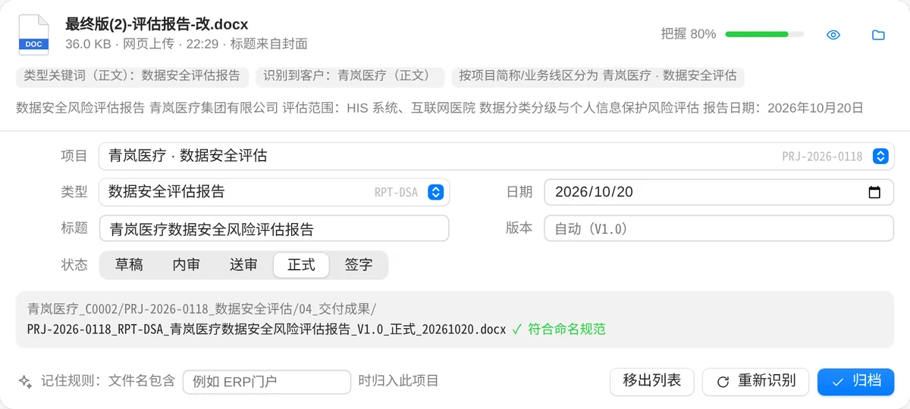
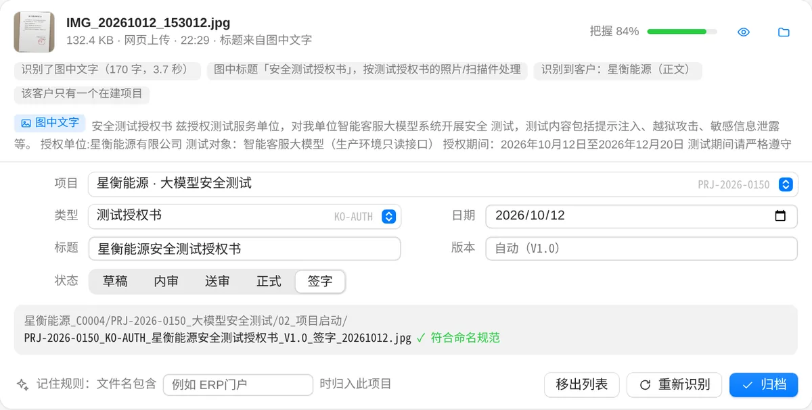
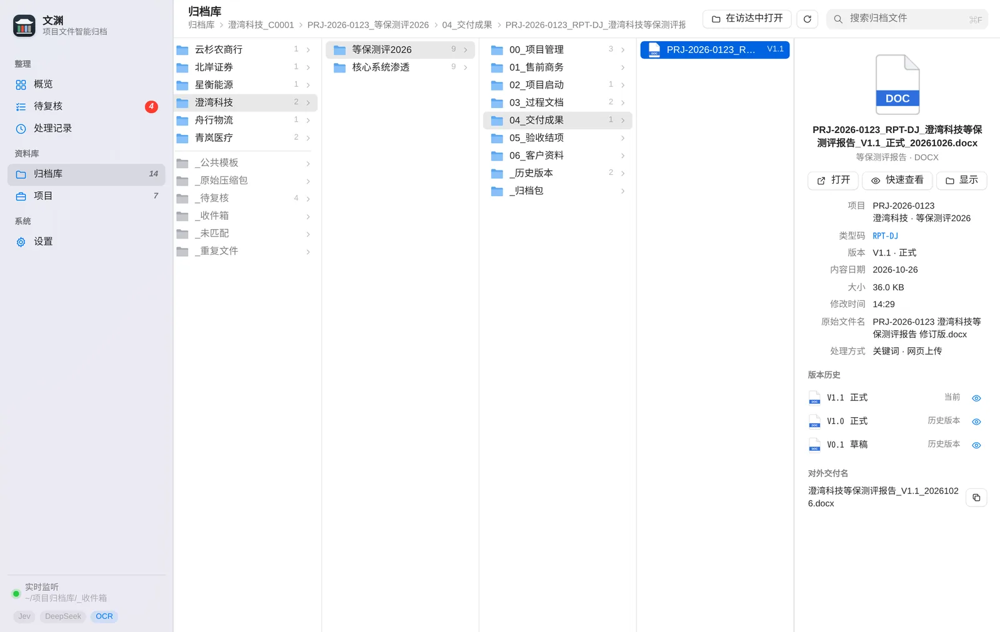
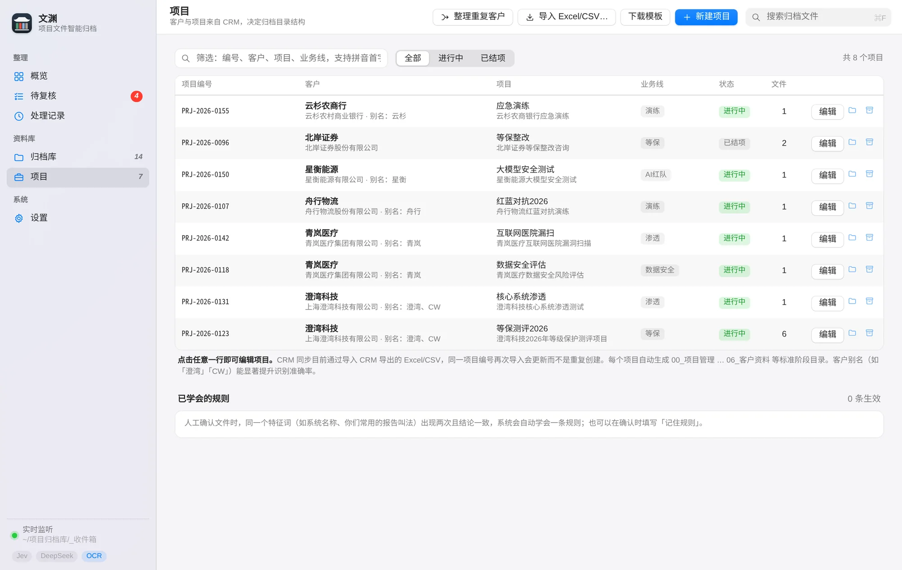

Recognise
Project numbers first, then client names and aliases, then deliverable keywords. When a client has several active projects, business line and project keywords decide. Photos and scans are read on your machine first.
Hand Wenyuan a file. It works out which client, project and deliverable it belongs to, renames it to one consistent standard, and files it into the right stage folder. It only asks when it isn’t sure, and it all happens on your own computer.
Free. Windows 10/11 and macOS, with Python 3.9 or later. The app’s interface is in Simplified Chinese.
Every file goes through the same four steps. The reasoning is always on show, and whenever a step is uncertain, it stops and asks.
Project numbers first, then client names and aliases, then deliverable keywords. When a client has several active projects, business line and project keywords decide. Photos and scans are read on your machine first.
Project number, type code, title, version, status and date, in that order, every time. Noise like “final”, “(2)” or “edited” is stripped. Drop in a newer copy and the version goes up; the old one moves to the history folder.
Drag files into the page, drop them in the inbox folder, use right-click Send to on Windows, or let it pick up files you receive in WeChat and WeCom. Archives are unpacked and filed one by one.
Browse client, project and stage in columns, like a bookshelf. Search tolerates gaps between characters, and project pickers accept pinyin initials.
Whoever files it, it comes out the same. No more renaming or reconciling versions at hand-over or audit time.
PRJ-2026-0118Project numberFrom your CRM; a match locks the projectRPT-DSAType code31 built-in deliverable types, and your own青岚医疗数据安全风险评估报告TitleClient short name plus subject, 30 characters at mostV1.0VersionDrafts are V0.x; the first formal release is V1.0正式StatusDraft, internal review, client review, final, signed20261020.docxDateThe document’s own sign-off dateEvery project gets the same seven stage folders, generated from your CRM project list. Rename a client and its folder follows.




Screenshots show the app’s Simplified Chinese interface.
Export the project list from your CRM as Excel or CSV and import it. Client, project and stage folders are created for you.
Drag them into the page, drop them in the inbox folder, right-click Send to on Windows, or switch on WeChat and WeCom collection.
Most files are filed automatically. Glance over the rest in Review and press Enter.
The Wenyuan Pavilion (文渊阁) in the Forbidden City was completed in 1776 to house the Siku Quanshu, the great imperial collection of Chinese books. From outside it looks two storeys high, but it holds three; its roof is laid with black glazed tiles, black standing for water, to keep fire away from the books.
Each of the four sections was bound in its own colour, so the right shelf could be found at a glance. Our mark is that pavilion, with four coloured cases under its eaves. Your archive has three levels too, client, project and stage, so every file has an obvious place.
Historical source: 文渊阁与《四库全书》, Guangming Daily (in Chinese)
Used 归档官 before?That was Wenyuan’s previous name. Unzip the new 文渊 folder next to the old one and start it: settings, projects, history and learned rules carry over, and the old right-click and startup entries are renamed.
Yes. Project numbers, client names and aliases, deliverable keywords, learned rules and your filing history handle most files. With Jev configured, it chooses among candidate projects when keywords can’t decide; with DeepSeek, it reads the opening text to produce better titles and dates.
No. Wenyuan runs on your computer, and text in images is recognised locally. Only if you switch on AI are the file name and opening text (1,500 characters by default) sent to the model service you configured. Files themselves are never uploaded.
Word (docx), Excel, PowerPoint, PDF (including scans), plain text, and images such as JPG, PNG and HEIC. zip, 7z and tar archives are unpacked automatically; rar needs 7-Zip or WinRAR installed. The content of legacy .doc files is read on macOS; on Windows they are judged by file name.
Undo it from Overview or Activity. The file goes back to Review and any version it replaced is restored. Once you correct it, the automatic rule behind the mistake is switched off.
Usually after a database reset, or when a client is spelled two ways in your CRM. Open Projects and choose Tidy Duplicates: folders matched by project number are pre-selected, files are only moved, never deleted, and identical copies are kept once.
Only the first time, to install dependencies (from a mirror in mainland China by default). After that, everything except the AI features works offline.
Yes.